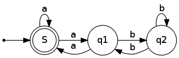
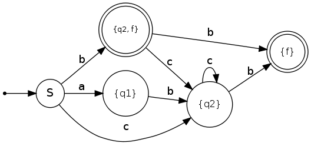
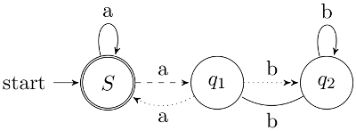

Finite-state machines are necessary to show that some problems are computable (or not).
As I am currently learning something about them, I would like to be able to plot those finite automatons automatically. I will use graphviz.
Nondeterministic finite-state machine
{kind=link}

This image is created from a gv-file. I saved it as fsm.gv:
digraph finite_state_machine {
rankdir=LR;
size="8,5"
node [shape = doublecircle]; S;
node [shape = point ]; qi
node [shape = circle];
qi -> S;
S -> q1 [ label = "a" ];
S -> S [ label = "a" ];
q1 -> S [ label = "a" ];
q1 -> q2 [ label = "b" ];
q2 -> q1 [ label = "b" ];
q2 -> q2 [ label = "b" ];
}
To create a graph (or the picture of the nondeterministic finite-state machine) you have to enter the following command in Ubuntu Linux:
dot -Tpng fsm.gv -o myFiniteStateMachine.png
Deterministic Finite-State Machine
{kind=link}

digraph finite_state_machine {
rankdir=LR;
size="8,5"
node [shape = doublecircle, label="{f}", fontsize=12] f;
node [shape = doublecircle, label="{q2, f}", fontsize=10] q2f;
node [shape = circle, label="S", fontsize=14] S;
node [shape = circle, label="{q1}", fontsize=12] q1;
node [shape = circle, label="{q2}", fontsize=12] q2;
node [shape = point ]; qi
qi -> S;
S -> q1 [ label = "a" ];
S -> q2f [ label = "b" ];
S -> q2 [ label = "c" ];
q1 -> q2 [ label = "b" ];
q2f -> f [ label = "b" ];
q2f -> q2 [ label = "c" ];
q2 -> f [ label = "b" ];
q2 -> q2 [ label = "c" ];
}
LaTeX
If you want to draw finite-state machines with LaTeX, you might want to give tikz a try.
This is the most minimalistic version I could create. It is equivalent to the nondeterministic finite-state machine I've described above:
\documentclass{scrartcl}
\usepackage{tikz}
\usetikzlibrary{arrows,automata}
\begin{document}
\begin{tikzpicture}[>=stealth',shorten >=1pt,auto,node distance=2cm]
\node[initial,state,accepting] (S) {$S$};
\node[state] (q1) [right of=S] {$q_1$};
\node[state] (q2) [right of=q1] {$q_2$};
\path[->] (S) edge [loop above] node {a} (S)
edge node {a} (q1)
(q1) edge [bend left] node {a} (S)
edge node {b} (q2)
(q2) edge [loop above] node {b} (q2)
edge [bend left] node {b} (q1);
\end{tikzpicture}
\end{document}
This was the most basic example which shows how to draw a finite-state automaton with LaTeX. You can get it as a PDF with this command:
pdflatex latexsheet.tex -output-format=pdf
If you want to see some more fancy stuff, take a look at this example of a non-deterministic finite state machine:
{kind=link}

\documentclass{scrartcl}
\usepackage{tikz}
\usetikzlibrary{arrows,automata}
\begin{document}
\begin{tikzpicture}[>=stealth',shorten >=1pt,auto,node distance=2cm]
\node[initial,state,accepting] (S) {$S$};
\node[state] (q1) [right of=S] {$q_1$};
\node[state] (q2) [right of=q1] {$q_2$};
\path[->] (S) edge [loop above] node {a} (S);
\path[->, dashed] (S) edge node {a} (q1);
\path[->, dotted] (q1) edge [bend left] node {a} (S);
\path[->>, dotted] (q1) edge node {b} (q2);
\path (q2) edge [loop above] node {b} (q2)
edge [bend left] node {b} (q1);
\end{tikzpicture}
\end{document}
Markov Models
\documentclass{scrartcl}
\usepackage{tikz}
\usetikzlibrary{arrows,automata}
\begin{document}
\begin{tikzpicture}[->,>=stealth',shorten >=1pt,node distance=2.8cm]
% When you want to use // inside of nodes, you have to algin
\tikzstyle{every state}=[align=center]
\node[state,initial,label=below:Start] (Start)
{A 0.6\\B 0.2\\C 0.2};
\node[state,label=below:Mitte] (Mitte) [right of=Start]
{A 0.1\\B 0.1\\C 0.8};
\node[state,label=below:Ende] (Ende) [right of=Mitte]
{A 0.5\\B 0.2\\C 0.3};
\path (Start) edge node[above] {0.2} (Mitte);
\path (Mitte) edge node[above] {0.8} (Ende);
\path (Start) edge [loop above] node {0.8} (Start);
\path (Mitte) edge [loop above] node {0.2} (Mitte);
\path (Ende) edge [loop above] node {1} (Ende);
\end{tikzpicture}
\end{document}
Further Reading
- DOT Node Shape reference
- ubuntuusers.de (German): Installation on Ubuntu
- Wikischool.de (German): Many examples